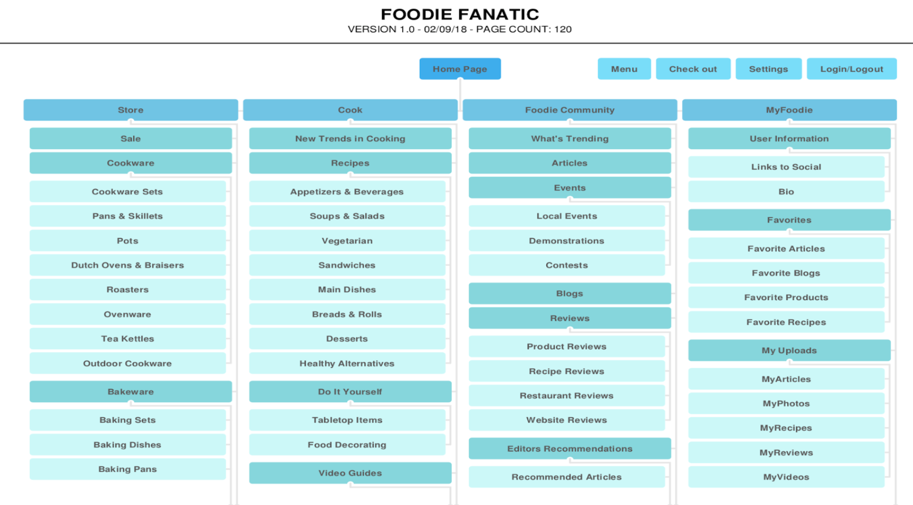

Foodie Fanatic Website Design
Information Architecture
Information Architecture
R Base Programming
Design Thinking
Information Visualization

Web Development
Shelving Operations
Foodie Fanatic endeavors is to inspire, educate and outfit customers for a lifetime love of food and cooking. The Foodie Fanaticwebsite serves as the primary means of online interaction with customers. It is a place where people can research and purchase products that are sold by Foodie Fanatic, locate expert advice, events and other information related to the food industry, and interact and engage with the company and other customers.
BUILT FOR:INFORMATICS 330 - Information Architecture
(Winter 2017)
ROLE: User Experience Lead, UX Designer, Taxonomist
CREATED WITH: Basalmiq, Figma, Taxonomy Cards
Foodie Fanatic users are in need of a website that is easy to navigate and obtain desired information that is accessible to everyone. Users want a site tailored to their individual needs, so users are not forced to deal with unwanted information.
To drive product sales and inform customers of the latest trends relating to food, with the intention to ultimately engage and excite customers about the Foodie Fanatic brand.
In order to approach this problem, we would have to define what our agenda is.
We are here to help you drive product sales and inform users of the latest trends relating to food. Whether it be recipes, cookware, or ingredients, we intend to ultimately engage and excite users about the Foodie Fanatic brand.
Our current problems that our existing that our users are having is that many users feel that the site is cumbersome and difficult to navigate. This often leads users to search other resources for their needs. Also, the users are not aware of the breathe of offerings from Foodie Fanatic. Users do not realize that Foodie Fanatic has extensive recipes, instructional content presented via multi-media and food related events and classes. Most importantly, users are confused about about the site contains.
For the purpose of this project, with business and content goals in mind. To remedy some of the issues above, I have put forth a series of principles when redesigning Foodie Fanatic. Our ease of access, espicially on mobile should be our top priority first because the majority of our users would use this application on a mobile device, instead of desktop computers. Thus, having a mobile first approach would be ideal. The users stated that the site is confusing to look and and does not understand what it really contains. Therefore, a clarity and relevance to what the user is looking for is another value that sohuld be focused on. A sense of community as well as social interaction between users should be encourages and promote the growth of this product and encourage the involvement and inclusion of all users with varying skills, backgrounds, and experiences. Our online strategy is to develop a social media platform centered around food, allowing users to interact with a diverse group of foodies. This includes staying conected with their community by keeping up with the latest events, share personal content, voicing their opinions, providing feedback to other foodies, and further establish their credentials within their community.
Given the problems that were discusses with the conflicts of the original website/mobile application, focusing and analyzing popular food websites like Williamson Sonoma is important because of how successful their website is.
A model of our websites/phone application content designed to help both users and search engines navigate the site.
Created user personas to tackle our major problems given people with different backgrounds:
Here is what it looks like in theory, of how a user would use this mobile application.

This is our product mockup with high fidelity mockups, translated from our low fidelity protoypes.
This app allows users to see the most frequented crimes within their state. Specifications can include their county, zip code, city, and year. It provides over 1000 entries specifying the type and number of crimes committed.
BUILT FOR:INFO 201: R - Based Programming
Winter 2017
ROLE: Programmer
CREATED WITH: R - Studios, Washington Crime Rates from Data.gov
The data our group extracted shows the crime committed in Washington State.We used shiny app that displays multiple graphs of different types of data represented. The bar graph displays the type of crimes and the amount of crimes committed for a specific individual county and year. The pie also does the same thing, but in a pie chart form. The scatter plot compares the average population to the total crimes, showing correlation, and the second scatter plot displays the number of occurance of the crime the user chose in each county. The boxplot shows the overall statistics of the different crimes being committed in a given county. The map of the state shows the highest crime committed within a certain county.
https://catalog.data.gov/dataset/washington-state-criminal-justice-data-book/resource/ee04f2a9-d77a-4bf8-bb70-32dcfdbfeae7
Students come to the University of Washington for a multitude of reason, whether it be to further their education, get a degree, or to figure out what they want to do for the rest of their lives. For many, reaching their goals include enrolling in difficult courses. Students that struggle or have questions with the content of said courses are only offered help through office hours, or CLUE sessions late at night. Here lies one problem with the current system, for some students, they are not able to attend said office hours or extra sessions for help.
CREATED WITH: Adobe Illustrator, Adobe Photoshop
In order to solve our problem, we decided to create our product as an extension of Canvas. By doing this, we decrease the gap between the user’s goal and the means needed to execute said goal. Rather than create a completely separate app or website, which requires the user to go somewhere completely different, create or link an account and making separate login credentials; AssignmentAider will be a part of Canvas so all the user will need to do is log in to Canvas to access our site. It is a means to have another facet for students to get additional help if they can not attend office hours or clue sessions. This solution gives students access to help that fits into the student's schedule. Students are able to quickly direct themselves to the problem that they need additional assistance on, or a quick source of guidance on the material that they are currently learning in class. This will help pace students based on their desired progress because given our feedback from our survey questions, students feel either rushed, or slowed when attending clue and office hours because of the limited time that they have or the amount of students attending the same event.
https://docs.google.com/document/d/1VC_iSaPeQemsOY9FL3tX3A_h5q0Qv9FOy6WfU7RMaiI/edit
https://docs.google.com/document/d/11I20pLK12cbGuomdBK27m7PjiYpjTLsbD40TFjUXupw/edit/
https://invis.io/EDEKHCK2S
BUILT FOR:
INFO 362: Visual Information Design
Winter 2018
ROLE: Design
CREATED WITH: Adobe Illustrator, Adobe Photoship, Tablaeu
Kobe Bryant played on the lakers but before he was drafted, he played in Lower Merion High School, based in Philadelphia. Many people know who Kobe Bryant is, and all of them can say he was one of the greatest of all time. Given the national basketball association data, Kobe holds the record of being the second highest points scored given a single game, which is 81. Also, he was the top 10 NBA scoring leaders. This list included Wilt Chamberlain, David Thompson, Devin Booker, and other legendary players throughout the history of the National Basketball Association. He’s been in the NBA for 18 years, being the youngest to ever enter the league, at 18. Kobe wore #24 in highschool before switching to 33, but it was retired in honor of KareemAbdul-Jabbar and also the number 24 was taken by one of his temamates on the team and was traded to the lakers. He then chose number 8 jersey He has earned himself many awards given that he has broken many records, and even topped the best of the best players.
I've held mutiple positions that required me to design graphics. See some of my graphic design works on the right.
DESIGNED FOR: INFO 343 - Client Side Web Development
CREATED WITH: HTML/CSS/JAVASCRIPT
Welcome to "Yummyly API", where our goal is to make most of your ingredients that you have at home! Come join us with many others to not waste the food you have at home and to turn it into scrumptious meals! This project uses be using an API from Yummly that makes it easier to find recipes based on the ingrediants you have in your fridge, in order to inspire college students to cook more and decrease food waste! Yummly's API has a wide variety of recipes and enables searching by ingredients included or excluded in the recipe.
WORK FROM: July 2016 - Present
ROLE: Sort, file and retrieve library materials and assisted with the organization of library materials. Provide services to patrons such as directory and technology assistance. Developed a working knowledge of the library including HORIZON program for SPL.
BRANCHES WORKED: International District/Chinatown, Beacon Hill, New Holly, Rainier Beach